Build the simplest robot that scores.
A catalog of every mechanism type you will see in FTC, what each is good for, and what breaks. Plus the design rules we learned the hard way. Start with the principles, then use the filters to find the mechanism you need.
Design principles
KISS: keep it simple, stupid
- Functionality over coolness. Looks are the reward for when the robot already works.
- If a part needs five separate custom brackets to mount, reconsider whether it belongs there at all.
- Do not start the season with a pile of untested complicated mechanisms (differential swerve and a telescoping tube in the same year, for example).
- You do not need a robot that does everything if that makes it harder to follow your strategy.
Touch it, own it
- Design the intake so the robot has full control of the game element the moment it makes contact.
- Spinning compliant wheels or counter-rollers do this. A claw that has to be aimed does not.
- Credit to Sameer for the phrase. It is the single best test of an intake design.
Buildability
- Design the robot so it is possible to assemble, and to take apart again. Nobody remembers this, and entire days get lost reassembling mechanisms for no reason.
- Screw access: if you cannot fit a finger in the gap, redesign. A 0.2-inch clearance turns a 20-minute install into an hour.
- Make an exploded view of anything tightly packed so the builders can see where that one hyper-specific gear goes before they forget to install it.
- Include every spacer and washer in the CAD. Guessing at 30 spacer combinations to stop a wheel wobbling is not a good afternoon.
Material science
- 3D-printed plastic wears out under normal use: swerve gears, custom pulleys on hex shafts, slide clamps. Use nylon or metal where it matters.
- Lubricate high-torque gears to slow wear. Do not lubricate high-speed mechanisms; it just flings off and collects grit.
- Do not overdo it either. A heavy aluminum plate for a sign holder is dead weight.
Think of your coders
- A differential swerve with a fully articulated stabilized arm sounds neat. Code takes time and experience, and a coder who quits in week one because the robot is impossible is worse than a plain drivetrain.
- Put the Control Hub where you can actually plug into it. Not behind a U-channel in a 1 cm gap.
- Every mechanism needs a sensor the code can trust: a limit switch, an encoder on the output, a distance sensor. Design the mount in.
Strategy first
- You can make a mechanism simpler and more robust at the cost of capability if that fits your strategy better. This is a necessity in FRC too.
- Optimize for cycle time, then robustness, then everything else.
- There is no weight limit in FTC, but weight still costs acceleration, tipping stability, and battery. Lighten what is not on a load path.
Two days before the last qualifier one season, team 26983's Control Hub got wiped. At the same time, a code library that formed the backbone of their code had a dependency removed from the internet, so they could not reinstall it. Two lessons: commit working code to Git after every event, and keep dependencies boring.
What to optimize, in order
Robustness
A season is 20 to 30 matches plus hundreds of practice cycles. Bearings on every loaded shaft, metal or nylon gears, fasteners with lock nuts or thread locker. A mechanism that works 80 percent of the time is a mechanism that loses matches.
Cycle time
Under two seconds from intake to release is the target for a scoring mechanism. Gear ratios, motor choice, and doing two motions at once in code all feed into this. See cycle time.
Efficiency
Friction is current. Bearings, Delrin or UHMW sliders, and aligned shafts keep motors cool and the battery from sagging. A binding slide can pull more current than the drivetrain.
Mechanism catalog
Filter by type or search the cards. Every card links to detail; photos are examples from past robots and vendors, not recommendations.
Drivetrains
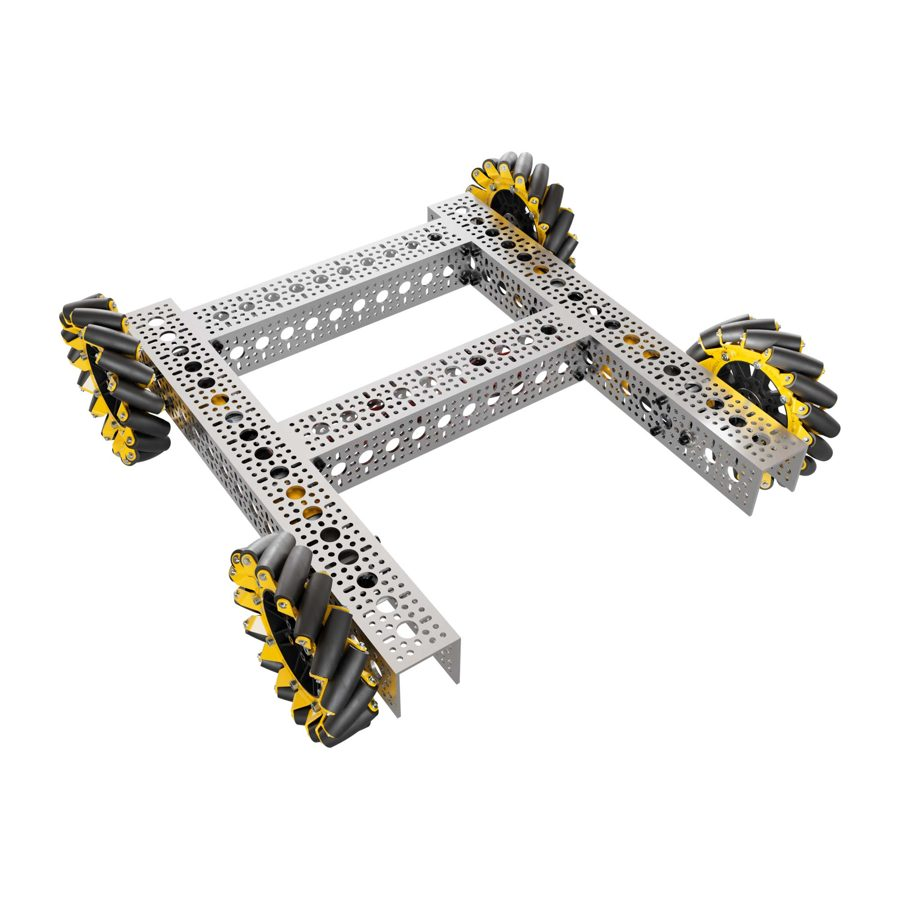
Mecanum
Four wheels with 45° rollers. Drives, strafes, and spins. Simple to build and code, and every vendor sells a kit.
- Easy to code (four lines of math)
- Lines up on goals fast
- Off-the-shelf everything
- Weaker pushing than tank
- Bulky wheels, needs a flat rigid frame
- Slips on dusty tiles
Build notes
- Roller pattern must form an X when viewed from the top. Get one wheel backwards and it will not strafe.
- All four wheels must touch the floor. A twisted frame lifts one wheel and the robot crabs. Rigid chassis or a flexible mount.
- Gear for about 3 to 5 ft/s free speed. The 312 rpm Yellow Jacket on 96 mm wheels is the common starting point.
- Keep the center of mass low and centered so strafing does not lift a corner.
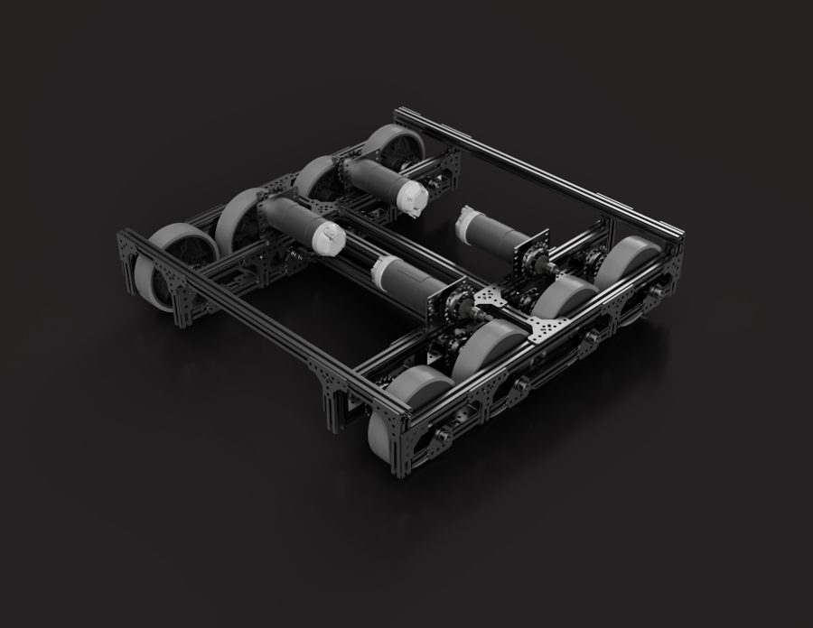
Tank (skid steer)
Left side and right side driven separately. The simplest drivetrain that exists.
- Best pushing power and traction
- Fewest parts, smallest footprint with 2 motors
- Trivial code
- Has to turn to line up, which costs seconds every cycle
- Six-wheel versions need a dropped center wheel to turn well
Build notes
- Four traction wheels on a rectangle will fight you when turning. Use omni wheels on the corners or drop the center wheel about 1/8 inch.
- Good choice for a rookie team's first month or a defensive strategy.
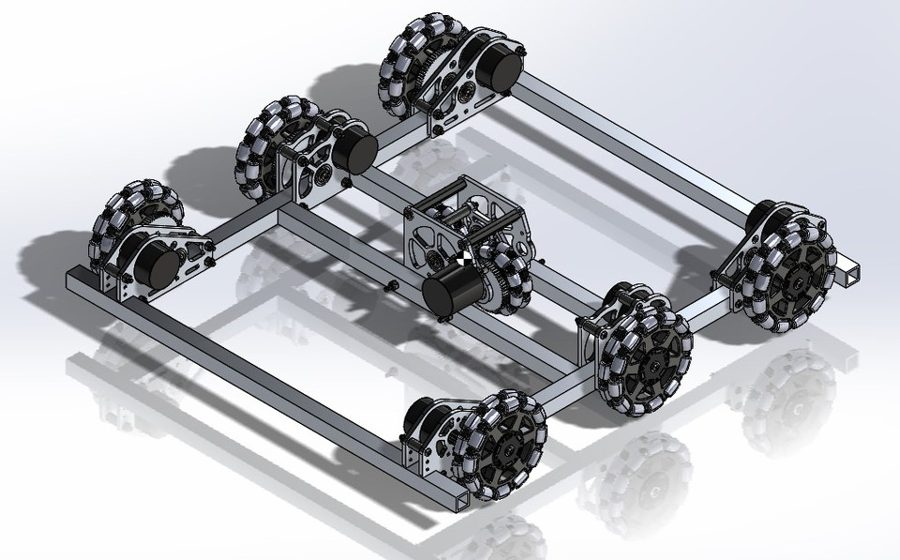
H-drive
Tank drive on omni wheels plus one or two perpendicular wheels in the middle for strafing.
- Simple code
- Uses traction wheels for driving straight
- Center wheel eats the middle of the robot
- Strafe wheel has weak traction; motion is not truly holonomic
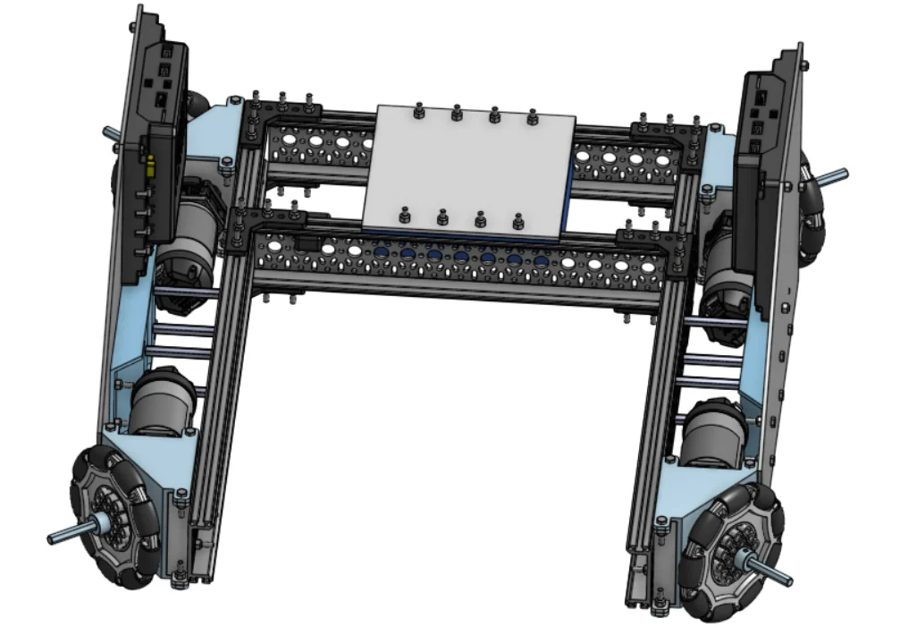
X-drive
Four omni wheels at 45°. Very fast in any direction.
- Fast, smooth holonomic motion
- Cheap wheels
- Low traction, easy to push around
- Awkward frame shape, wastes cube volume
- More math than mecanum for little gain
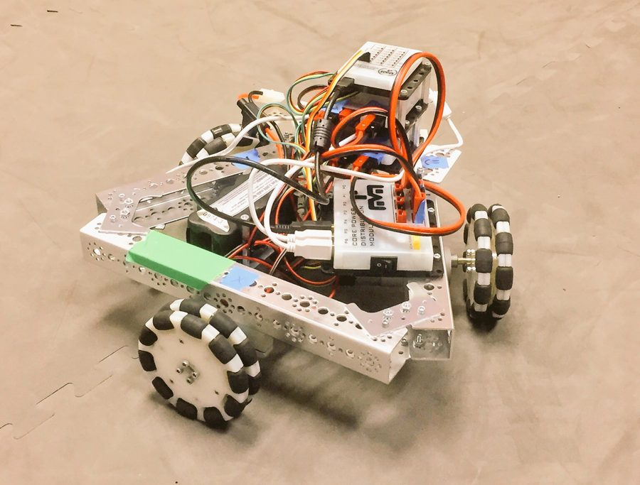
Kiwi drive
Three omni wheels in a triangle. Compact and agile, mostly a curiosity in FTC.
- Saves a motor
- Small footprint
- Three wheels of traction
- Round frame wastes the cube
- Unusual kinematics to code
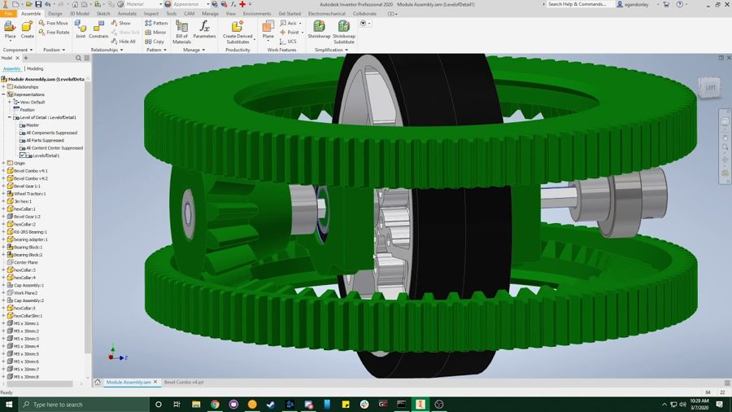
Swerve (coaxial)
Each wheel steers independently. The fastest, most precise drivetrain, and the one most likely to break mid-season.
- Fast, precise, traction wheels in every direction
- Genuinely impressive
- Hard to make, code, and maintain
- Bulky modules, custom parts
- Will break at some point mid-season
Differential swerve, specifically
- Two motors per module drive a differential: same direction steers, opposite directions drive. Uses your motor budget fast (eight motors for four modules).
- Needs about four months of pre-season work. It will still break.
- Gear wear was the killer on ours. PLA, ASA, and ABS all wore out; nylon resin lasted longest. Lubricate the gears.
- If you want one anyway, look at the 201 differential swerve on CAD Crowd and the FTC Discord showcase before drawing your own.
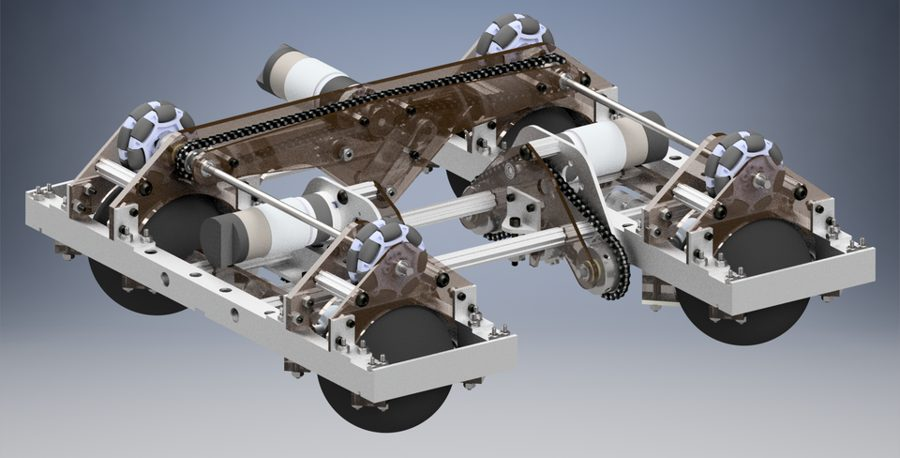
Ball drive, wobble drive, and friends
Experimental drivetrains exist. They are fun engineering. They are not competition drivetrains.
Drivetrain comparison table reference
| Drivetrain | Motors | Holonomic | Traction | Code | Build | Pick it when |
|---|---|---|---|---|---|---|
| Mecanum | 4 | Yes | Medium | Easy | Easy | Almost always |
| Tank | 2–4 | No | High | Easiest | Easiest | Rookie month, defense, pushing games |
| H-drive | 3–5 | Partly | Medium | Easy | Medium | Rarely |
| X-drive | 4 | Yes | Low | Medium | Medium | Speed matters more than pushing |
| Kiwi | 3 | Yes | Low | Medium | Medium | You need the fourth motor elsewhere |
| Coaxial swerve | 4 + 4 servos | Yes | High | Hard | Hard | Veteran team, full pre-season |
| Differential swerve | 8 | Yes | High | Very hard | Very hard | You want the story more than the ranking |
Intakes
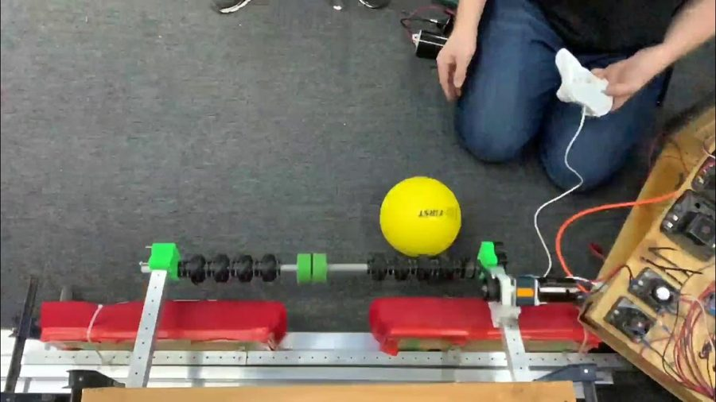
Compliant wheel intake
Squishy wheels spinning toward the robot. They deform around the element and pull it in. Touch it, own it.
- Grabs on contact from sloppy angles
- Cheap wheels, one motor
- Wheels wear and tear over a season
- Needs a backstop or sensor to stop the element
Build notes
- Surface speed matters more than torque. Gear for the wheels to move faster than the robot drives.
- Leave a gap slightly smaller than the element so the wheel compresses about 20 percent.
- A color or distance sensor behind the wheels stops the motor and tells the driver you have it.
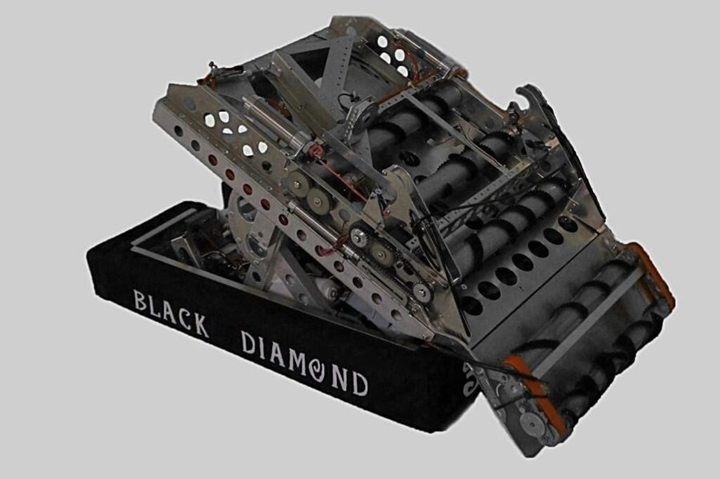
Counter rollers
Two rollers spinning toward each other. The element gets pulled between them and cannot escape.
- Most control of any intake
- Can center the element
- Two rollers to drive (belt one off the other)
- Bulkier, needs precise spacing
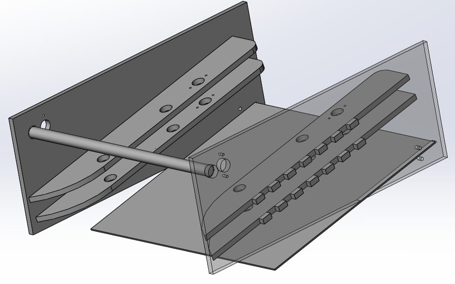
Ramp
Drive into the element and a low-angle ramp guides it up and in. Often paired with a roller on top.
- No motor
- Nothing to break
- Angle-sensitive; lower is better
- Little control once the element is in
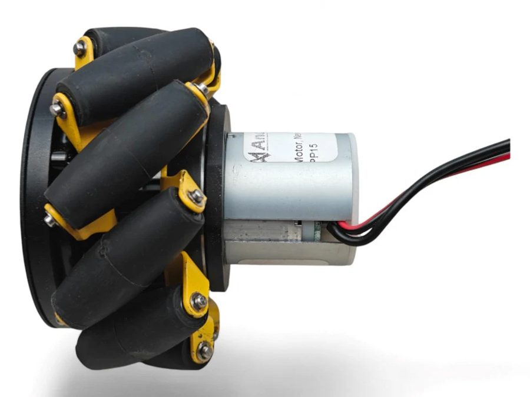
Mecanum wheel roller
A mecanum wheel spun as an intake roller pushes the element sideways toward the center as it pulls it in.
- Auto-centers without extra parts
- Durable
- Heavy and expensive for a roller
Other roller surfaces
- Rubber tubing / surgical tubing wrapped on a shaft: cheap, high grip, replaceable.
- Rubber bands across two rollers: very cheap, very short lifespan.
- Foam rollers: light and compliant, wear fast.
- Boot wheels / tread: high traction, heavy.
- Belts (conveyor): move elements a long way inside the robot; tension is the whole problem.
- Rotating tubing (weed whacker): fast and grabby, hard to control.
Grabbing and placing
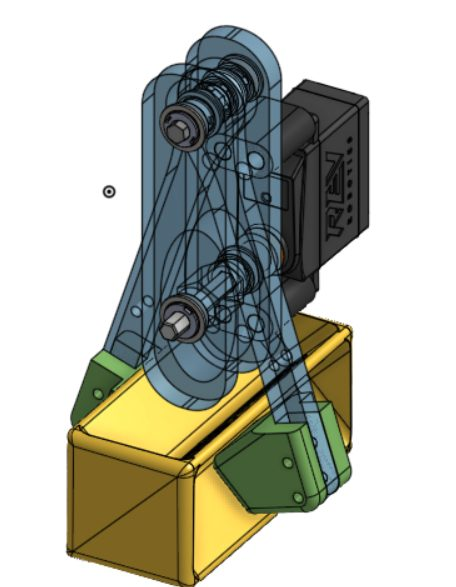
Pincher claw
Two fingers driven by a servo. Precise placement, simple to build.
- Precise, holds the element still
- Light, cheap, one servo
- Has to be aimed before it closes
- Small grip window; misses cost seconds
Build notes
- Print fingers in TPU or add TPU pads for grip. Rigid PLA fingers slip.
- Use a servo with feedback (Axon or a REV Smart Servo with analog) so the code knows when it is closed.
- Compliant fingers (flexible printed) forgive a bad approach angle.
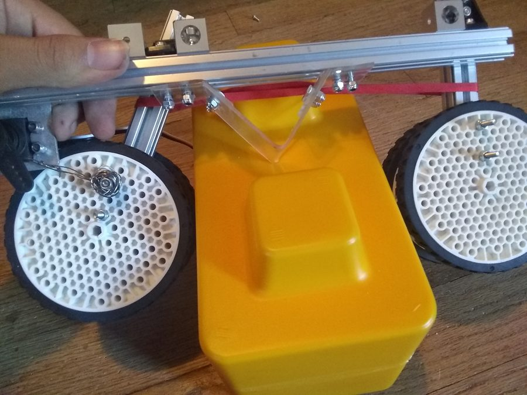
Roller claw
Rollers built into the end effector. Intake by spinning in, place by spinning out. No aiming.
- Continuous intake and release
- Forgiving approach
- Heavier at the end of an arm
- Needs power out to the end effector
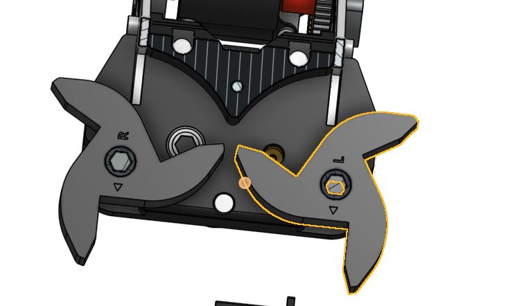
Hybrid claw
Rollers to pull the element in, fingers to lock it. Best of both, at the cost of weight and complexity.
- Grabs on contact and holds precisely
- Large, heavy, more actuators
- Two things to tune
Wrist and rotation
A servo between the arm and the claw to tilt or spin the element. Adds a degree of freedom to place at odd angles.
- Use a servo with 300° range (goBILDA or Axon) so you are not fighting the limits.
- Keep the wrist close to the pivot; every gram out there multiplies torque on the arm.
Arms and linkages
Pivot arm
One motor, one pivot, a claw on the end. The simplest way to reach up and over.
- One motor, easy geometry
- Torque at the pivot is huge when the arm is horizontal
- Claw angle changes as the arm swings unless you add a wrist
Build notes
- Gear down hard: 100:1 or more total for a long arm. Use the torque calculator below.
- Worm gear or a ratchet holds position with the motor off. Otherwise use feedforward in code.
- Put a through-bore encoder or potentiometer on the pivot shaft itself, not the motor, to dodge backlash.
- Counter-balance with rubber bands or gas springs to cut motor load.
Four-bar linkage
Two parallel arms. The end plate stays level through the whole swing, so the element does not tilt.
- Level carry with no wrist servo
- Stable, well-understood
- Limited range of motion
- Two arms means twice the bearings
Virtual four-bar
One arm, plus a belt or chain from a pulley fixed to the base to a pulley fixed to the claw. Same leveling effect, fewer parts.
- Compact, light
- Change the pulley ratio to tilt on purpose
- Belt tension is critical
- Harder to explain to judges (which is fine, it is a good Innovate story)
Segmented / articulated arm
Two or more joints. Reaches anywhere, and every joint is another motor, another encoder, and more code.
- Reach over obstacles
- Cumulative backlash at the tip
- Inverse kinematics in code
- Slow unless every joint moves at once
Linear motion
Linear slides
Telescoping rails on bearings (goBILDA Viper, REV, MiSUMI). The FTC lift. Driven by string on a spool, belt, or rack.
- Long reach from a small package
- Kits exist, well documented
- Rigging is fiddly the first time
- Sag and wobble with long extension
Build notes
- String: use braided spectra or Dyneema fishing line, not paracord. Route it so it cannot rub on an edge.
- Retract with a constant-force spring or a second string on the same spool so the slide comes down under power.
- A limit switch at the bottom for homing. Every time.
- Two parallel slides for anything that carries a claw off-center, or it racks and binds.
- Grease the bearings lightly and keep the rails clean. Tile dust is sandpaper.
Rack and pinion
A gear on a toothed bar. Direct, strong, no string to stretch.
- Positive drive both directions
- Simple to position with the motor encoder
- Travel limited to rack length
- Backlash, and the rack is heavy
Linear servo / actuator
A servo or motor driving a lead screw. Short stroke, high force, slow.
- Holds position with power off
- Compact
- Slow
- Linear servos have their own current limit in the rules
Scissor lift
It looks great in CAD. It wobbles, it binds, and the motor works hardest exactly when the lift is at its lowest.
Launching and aiming
Flywheel
A wheel spinning fast flings the element. Repeatable if wheel speed is controlled.
- Fast fire rate
- Adjustable range through speed
- Needs velocity control (encoder + PID or feedforward)
- Compression and wheel wear change the shot
- Power hungry at spin-up
Build notes
- Add mass to the wheel so it does not slow down between shots.
- A hood (curved backplate) and a fixed compression gap make shots consistent.
- Feed with an indexer so one element goes in at a time.
Catapult / puncher
Stored energy (rubber bands, a spring, or a motor-wound arm) released all at once.
- Simple, powerful
- Slow to reload
- Inconsistent as bands stretch
- Big and violent inside an 18-inch cube
Turret
A rotating platform (usually a big lazy-susan bearing or a printed ring gear) so the shooter or arm aims without turning the robot.
- Aim while driving
- Great Control Award story with vision
- Heavy, needs a bearing that does not wobble
- Wires to the turret need a slip ring or a limit on rotation
Power transmission
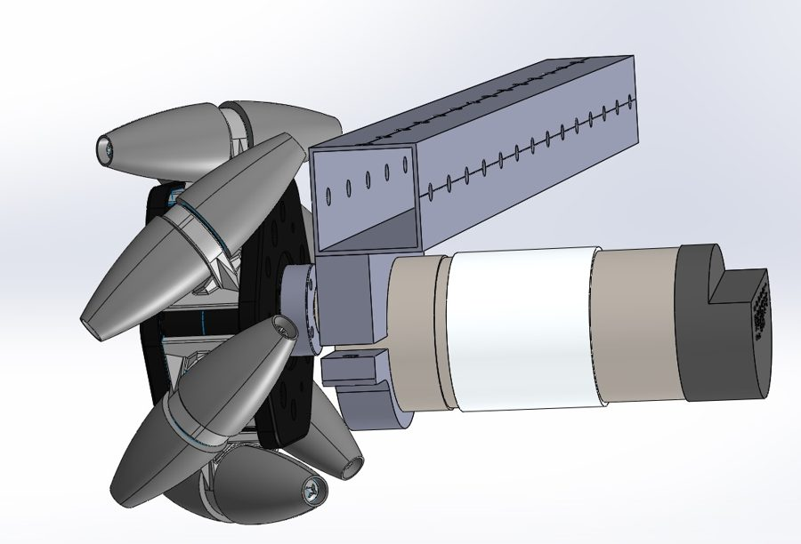
Direct drive
Wheel or mechanism straight on the motor shaft.
- Zero backlash, no parts
- Every impact goes into the gearbox
- Ratio fixed by the motor
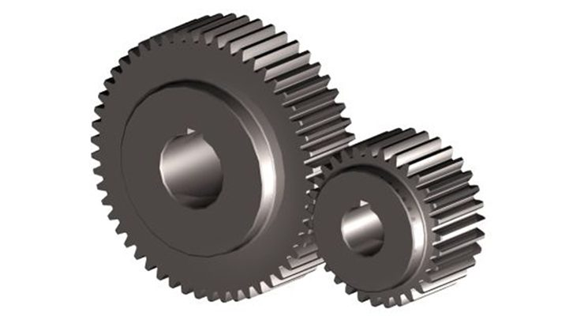
Spur gears
Flat gears with straight teeth. Efficient, cheap, and exact about center distance.
- Efficient (about 95% per stage)
- Vendor gears in every tooth count
- Backlash
- Center distance must be exact or they skip
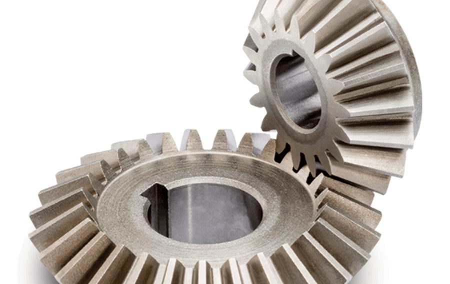
Bevel / miter gears
Turn rotation 90°. Miter gears are a 1:1 bevel pair.
- Compact right-angle drive
- Alignment is critical in two axes
- Thrust loads need bearings that take them
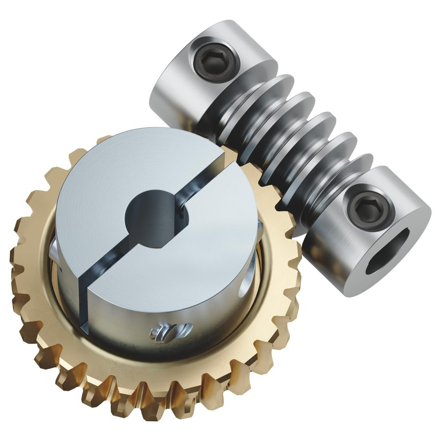
Worm gear
A screw drives a gear. Huge reduction in one stage and it cannot be back-driven, so an arm holds position with the motor off.
- Self-locking
- 20:1 or more in one stage
- Low efficiency (heat)
- Wears, especially printed
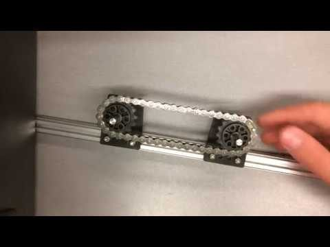
Chain and sprockets
Strong, forgiving about center distance, easy to change ratios.
- Robust, adjustable
- Half-links and tensioners fix any spacing
- Stretches, needs a tensioner
- Derails if sprockets are not coplanar
- Noisy, greasy
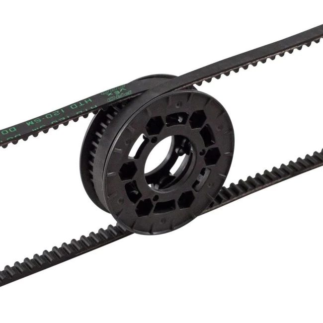
Timing belts
GT2 or HTD toothed belts. Quiet, low backlash, and they slip on a hard stop instead of stripping your gearbox.
- Smooth, protects motors
- Light
- Center distance set by belt length; design in a tensioner
- Slips under very high torque
Planetary gearbox
Sun, planets, ring. Compact and strong; it is what is inside every Yellow Jacket and UltraPlanetary.
- High torque in a small package
- Buy it, do not build it
- Fixed ratios per cartridge
Helical and herringbone
Angled teeth mesh gradually, so they run smoother and quieter than spur gears. Herringbone cancels the side thrust. Printable with FeatureScript generators.
Cycloidal drive
A lobed disc rolling inside pins. Very high reduction with almost no backlash. A cool pre-season project, not a mid-season fix.
Capstan drive
Cable wrapped around two drums. Zero backlash and very light. Limited travel, so it suits arm pivots and wrists. Watch the Aaed Musa video linked in resources.
Which transmission for which job reference
| Job | Use | Why |
|---|---|---|
| Drivetrain wheels | Direct on a Yellow Jacket, or belt/chain to a dead axle | Robust; belt protects the gearbox from wall hits |
| Intake rollers | Belt | Smooth, quiet, slips instead of stalling when jammed |
| Arm pivot | Planetary motor + one external stage (chain or gears), or worm | Big reduction; worm holds position |
| Slide spool | Direct or 1:1 belt | Speed matters; string does the reduction |
| Turret | Big ring gear or belt around the turret | Large ratio from geometry, low backlash |
| Flywheel | Belt, geared up | Need speed, not torque; belt tolerates the inertia |
| Right-angle drive | Bevel gears | Only clean way to turn 90° compactly |
Other mechanisms
Differentials
Split or combine power between two outputs. Used in differential swerve and in "two motors, two functions" arms. Metal gears, lubricated.
Ratchets and sprag clutches
Spin one way, lock the other. Lets one motor drive two mechanisms if each only spins one direction, or holds a lift with no motor power.
Brake cable (Bowden cable)
A bike brake cable in a sheath actuates something far from the servo. Lightweight, low friction, limited force. Great for a claw at the end of a long slide.
Constant-force springs
Coiled steel tape that pulls with the same force at any extension. The clean way to retract slides or counterbalance an arm.
Passive hooks and hangers
Endgame climbs are often a shaped hook on a slide plus a ratchet. No new motor. Study past endgame mechanisms in Past Games.
Build tips
Tools
- Buy good hex drivers and ratcheting wrenches. If building hurts your hand you will avoid building. A personal set saved my wrists last season.
- Label your tools. Other teams will take them whether they are labeled or not; labels get them back.
- Engrave or paint the team number on expensive parts (U-channel, slides) for the same reason.
- A digital caliper, a multimeter, and a tap set are the three tools that separate a shop from a pile of parts.
Process
- Study the CAD before you cut or assemble. Get it right the first time so you do not rebuild the same part five times.
- Collaborate with the designers on anything hard to access (swerve pods, nested slides). Make sure every spacer is in the model.
- Learn to disassemble and fix a motor and a servo. Do this before you have to at 1 AM in a hotel room.
- Zip ties and a little super glue are fine competition fixes. Duct tape is not (ask the mentors).
Fasteners
- Nylon-insert lock nuts or thread locker on anything that vibrates. Everything vibrates.
- Shaft collars slip. Use a set screw on a flat, or better, a hex shaft with a hub.
- Standardize: one screw size per build system (M4 on goBILDA, M3 on REV). Mixed hardware is how you lose an hour hunting for a nut.
Wiring while building
- Route wires before the mechanism closes up. Retrofitting a servo wire through a finished arm is miserable.
- Strain relief at every connector. Service loops on anything that moves.
- Nothing may pinch a wire through full travel. Move every mechanism by hand end to end and watch the wires.
- More in Electronics.
Frequent problems
Backlash and skipping gears
Cause: loose tolerances on printed gears, wrong center distance, long gear trains.
Fix: tighten printed tolerances (about -0.005 in on the gear), use metal or nylon gears, put the encoder on the output shaft. That last one hides backlash from the code but does not remove it.
Printed parts that do not fit
Cause: designing to nominal dimensions. Printed holes come out small.
Fix: loose fit -0.02 in, tight -0.01 in, very tight -0.005 in, halved for enclosed shapes. Details in Manufacturing.
Random disconnects
Cause: static discharge from the tiles into the Control Hub through the frame, or a brownout from stalled motors, or a loose XT30.
Fix: ground per FIRST's ESD guide with an approved resistive strap, check battery sag under load, strain-relieve power connectors. See ESD.
Chain derailing
Cause: sprockets not in the same plane, or too much slack.
Fix: shim sprockets coplanar, add a tensioner, keep the span short. Or switch to belt.
Slides that bind
Cause: off-center load racking the stages, dirty rails, string rubbing.
Fix: two slides in parallel for off-center loads, clean rails, route string over pulleys not edges.
Servo twitching or dying
Cause: too much load, or voltage sag when the drive motors stall.
Fix: gear the servo down or use a stronger one within the power rule, power high-load servos from a Servo Power Module or Servo Hub, never stall the drivetrain against a wall.
Robot crabs when driving straight
Cause: one mecanum wheel not touching, a wheel installed backwards, or one motor slower than the rest.
Fix: check frame flatness, check the X pattern, use encoders or the IMU in code to hold heading.
Loose everything after one event
Cause: vibration and no thread locker.
Fix: lock nuts, blue thread locker, a post-event screw check as a required task on the checklist.
Rules that shape the design
From the 2026–27 Competition Manual. Numbers change; the ideas mostly do not. Verify in the current manual before you rely on any of these.
- R102 Start size
- 18 × 18 × 18 inches, self-contained. Preloaded game elements may stick out.
- R105 Expansion
- After the match starts: 18 × 24 inches horizontally, 29 inches tall. Must be limited mechanically, not by software.
- R104 Weight
- No limit. Design light anyway.
- R503 Actuators
- 8 motors and 8 servos total across all configurations.
- R204
- No grabbing the floor or suction to the field.
- R301 COTS mechanisms
- No buying a purpose-built game mechanism. COTS drive chassis and official StarterBot mechanisms are the exceptions.
- R303 One degree of freedom
- COTS parts and mechanisms may have at most one mechanical degree of freedom, except ratchets, holonomic wheels, dead-wheel odometry kits, U-joints and flex couplers, and ball-joint linkages.
- R304 Reuse
- Pre-kickoff designs, parts, and code are all allowed. Reuse the drivetrain.
- R201–R203
- No mess, no hazardous materials, robot must be removable from the field with power off.
Where the good ideas are
- FTC Discord, Robot Showcase channelSearch anything and find CAD, photos, code, and portfolios that were only ever posted there. This is also where the best teams in the world hang out.Community
- Game Manual 0: Common MechanismsDrivetrains, intakes, linear motion, with photos and vendor part numbers.gm0
- Robot reveal videosSearch "FTC robot reveal" plus the game name. Pause and sketch what you see.YouTube
- FTC Onshape parts libraryMulti-vendor part library so you can CAD with real goBILDA and REV geometry.Community
- 201 differential swerve on CAD CrowdIf you are going to do it anyway, start here.Reference
- Capstan drive explainerShort video on why capstans have zero backlash.YouTube
Missions
Cardboard intake
- Build a roller intake from cardboard, a drill, and any wheel you can find.
- Test it on a real game element from any past season.
- Measure the widest approach angle it still grabs from.
Size an arm motor
- Pick an arm length and end-effector mass from a real or imagined robot.
- Use the torque calculator to choose a Yellow Jacket ratio and an external reduction.
- Show the math on one page, the way you would in a portfolio.
Teardown
- Fully disassemble and reassemble a Yellow Jacket gearbox and a servo.
- Photograph each step.
- Write a one-page maintenance guide for the team.
Buildability review
- Take any subsystem CAD from a previous season.
- List every screw a builder cannot reach with a driver, every missing spacer, every part with no exploded view.
- Fix the three worst and re-export.